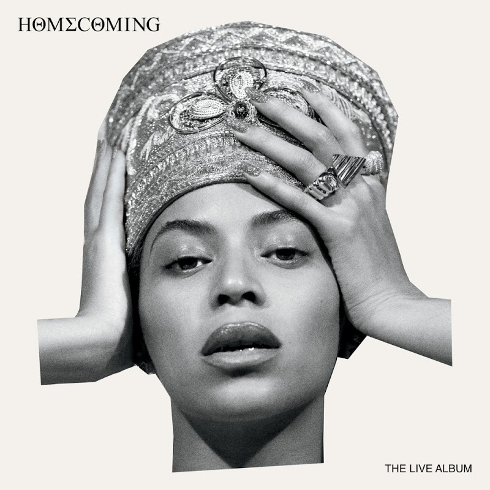
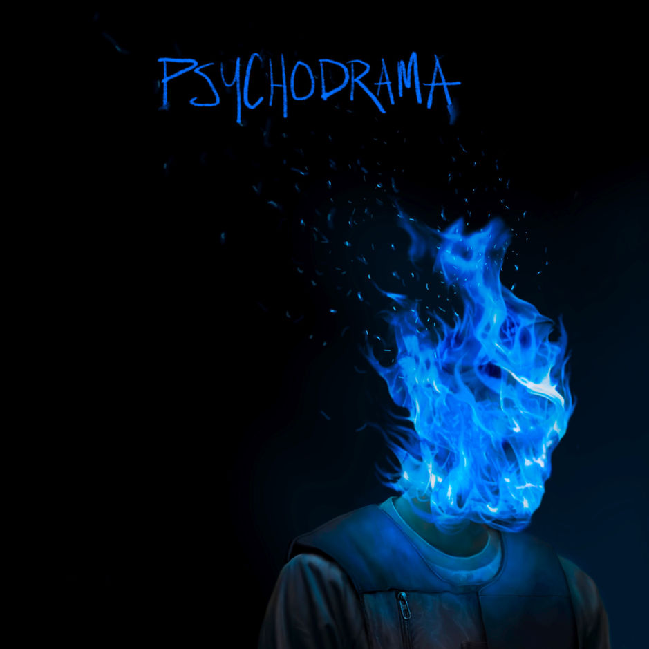
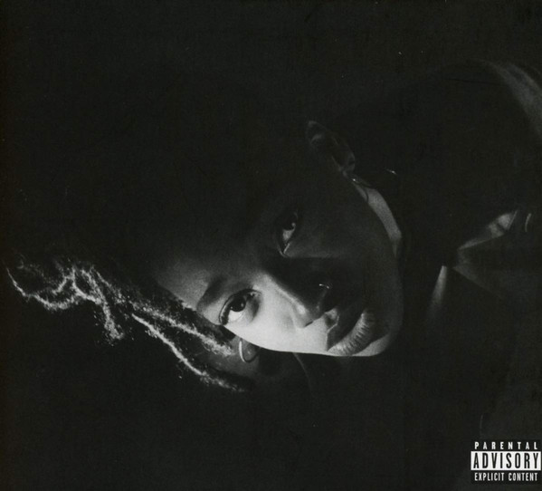
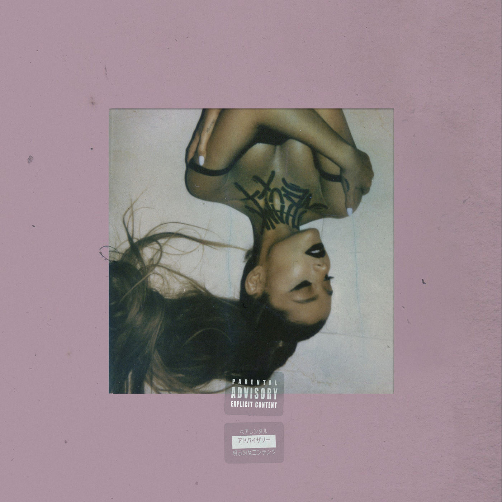
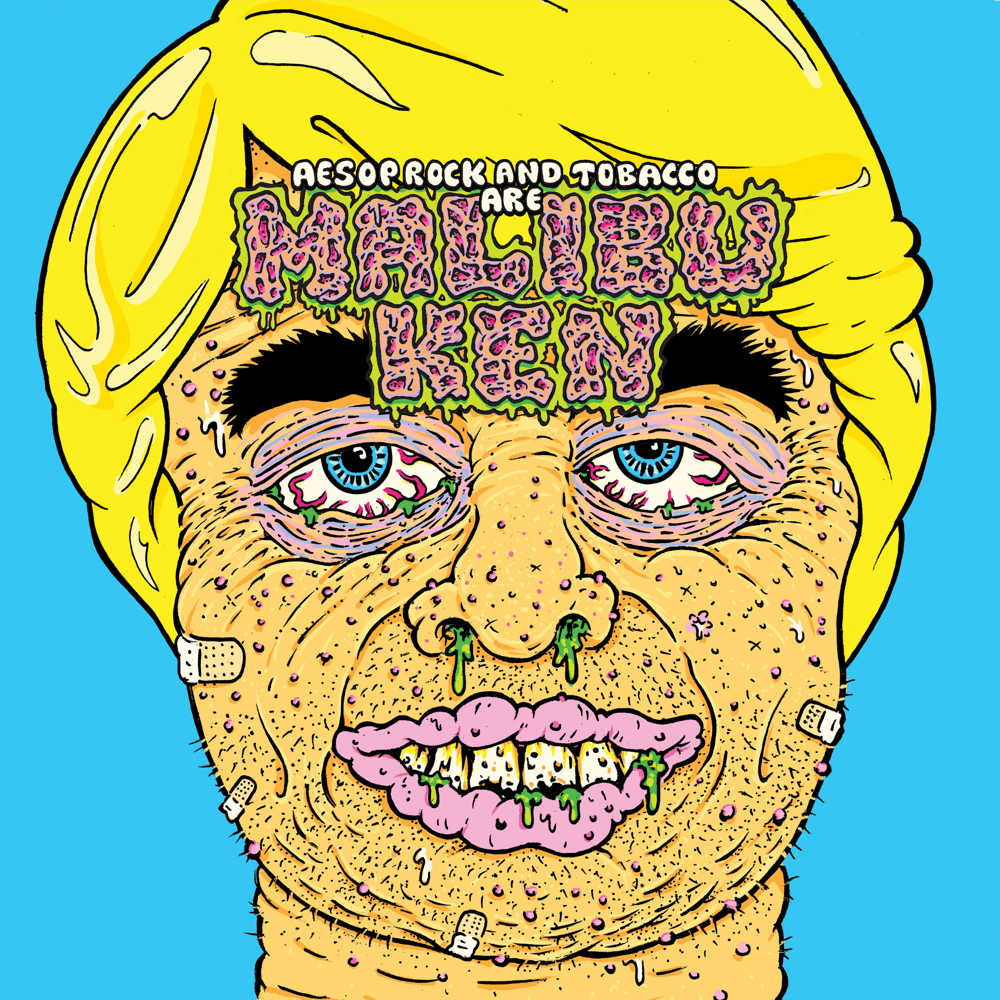

Released April 17, 2019
HOMECOMING: THE LIVE ALBUM
Beyoncé
Another surprise release, Homecoming is the live album from Beyoncé's 2018 Coachella headlining performance, which was also released as a Netflix documentary. It features live performances from J Balvin, Jay Z, Kelly Rowland and Michelle Williams,and Blue Ivy, as well as two bonus tracks: "I Been On" and a cover of Maze's song "Before I Let Go." The set also features samples from Malcolm X, Nina Simone and more.
"As far as concert albums go, Homecoming is a master class in technical prowess, crowd pleasing, and soulful substance. Channeling the spirit of African queen Nefertiti (whose image she adopted for this show), Beyoncé proved to be a ruler in her own right, lording over Coachella for two career-defining nights." -AllMusic
"Not only is Homecoming an artistically-sound triumph, it’s a cultural touchstone and, quite possibly, the live album of a generation." -HipHopDX
Released March 8, 2019
Psychodrama
Dave
This is the debut full-length studio album from British rapper Dave, and features guest performances from Burna Boy and J Hus. It's a concept album, following a therapy session with Dave as he struggles with mental health.
"PSYCHODRAMA is a consistently engaging record that echoes the complexities of being black in a broken Britain. It feels like a giant step forward for UK rap." -Highsnobiety
"PSYCHODRAMA isn’t an album to stand up and rejoice to. It’s a sit-down-and-consume, a listen-and-learn. In doing that, you appreciate the blood, sweat and tears that have gone into the prose." -The Line of Best Fit
"It's hard not to nod in agreement with what Dave's saying throughout Psychodrama, but generic instrumentals and humdrum flows don't translate many of his good points into captivating songs." -The Needle Drop
Released March 1, 2019

When I Get Home
Solange
This psychedelic soul album is a followup to her 2016 project, A Seat at the Table, and its theme revolves around Solange's hometown, Houston, TX. It includes contributions from some big names: Pharrell, Sampha, Playboi Carti, Gucci Mane, Panda Bear, Tyler the Creator, Metro Boomin, The-Dream, Dev Hynes, Steve Lacy, Earl Sweatshirt, and Scarface. It's accompanied by a 33-minute visual(only available on Apple Music).
"Although the album is punctuated by spoken-word interludes--bits of poetry, self-help, comedy and tribute--it is designed to flow as a whole, gradually infusing a room like incense or the smells of home cooking. ... And Solange’s voice is sure-footed and playful, confident that the music will follow her every whim. ... Outside a few prominent guest raps, Solange and her musicians slip the collaborators into the background. This is her space, her sanctuary." -The New York Times
Released March 1, 2019
GREY Area
Little Simz
This is the third release for the English rapper Simbi Ajikawo, a.k.a. Little Simz. It features appearances from Cleo Sol, Chronixx, Little Dragon, and Michael Kiwanuka, and was produced almost entirely by Inflo.
"Though Grey Area isn't the most cutting-edge rap album out there, there's not a spot on it where Little Simz falters even slightly." -The Needle Drop
"At turns both acerbic and unguarded, GREY Area feels like the grand culmination of everything Simz has been puzzling out to this point. She’s a preternaturally gifted lyricist, a prodigy who recorded her first raps at nine and released her earliest tapes in her teens; it simply took a while for her to apply that acuity to her songcraft." -Pitchfork
Released February 8, 2019
thank u, next
Ariana Grande
This is Grande's fifth studio album, written in the midst of a breakup with her fiancè, Pete Davidson, and the death of her ex-boyfriend, Mac Miller. The title track And the 2nd single, "7 Rings," both peaked at #1 on the Billboard Hot 100. Producers include Tommy Brown, Max Martin, Ilya Salmanzadeh and Andrew "Pop" Wansel.
"It’s contradictory, assured yet tender. It’s delicate but strong. It’s sweet pop music wrapped in an unbreakable metal shell. It’s beautiful but vulgar. It is, frankly, much more than we could have ever hoped for from her." -The Line of Best Fit
"The entire album plays like one epic pop-playlist, perfect for blasting in your car, getting ready for a night out (or night in) with girlfriends or while perhaps mulling the many aspects – both good and bad – of your life." -God Is in the TV
Released January 18, 2019
Malibu Ken
Malibu Ken
The debut album for the duo made up of rapper Aesop Rock and multi-instrumentalist Tobacco. Check out the grotesque accompanying music video for one of the singles, Acid King, below:
"It’s insular, gross, completely bonkers. But there’s a reason both of these men have built cults around their work." -Spectrum Culture
"Two albums of this might get tiring, but for 34 minutes, it works perfectly despite the predictability." -Sputnikmusic